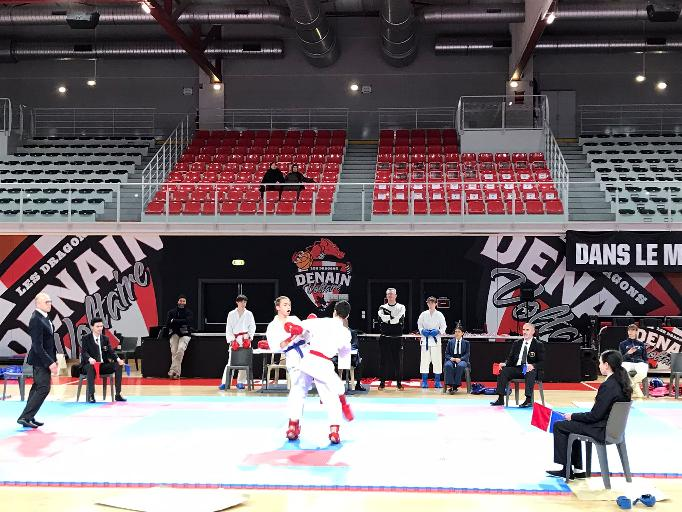
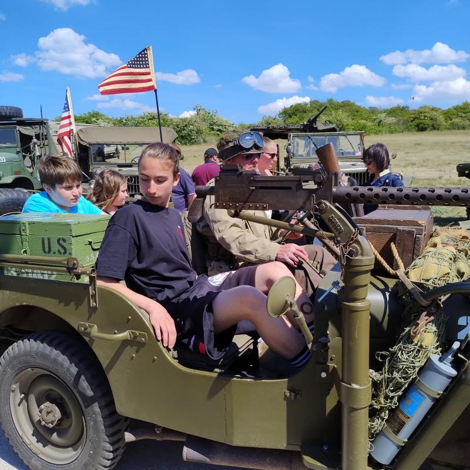

Mes passions
| Accueil | Productions scolaires | Mes passions | Mes vidéos | Mon site de rêve |
|---|
mes principales passions sont l'automobile et le karaté.
J'ai commencé le karaté il y a 5 ans juste après le covid-19. Jusque là, je n'avais jamais pratiqué de sport de combat, ni même d'autres sports, car j'avais commencé à pratiquer le basket à l'âge de 3 ans. J'ai vite appris, puis j'ai enchaîné les compétitions, chose que je préfère dans cette discipline.

Peux en témoigner mon site de rêve, l'automobile est une passion importante, que se soit pour moi ou pour les autres. A mon sens, c'est la passion qui rassemble le plus de monde autour d'un même sujet : "l'automobile". un sujet qui paraît alors annodin peut réellement se transformer en sujet sociétale. Ce qui est d'autant plus passionnant, chaque voiture a une histoire; chaque ligne, chaque courbe, chaque vrombissement raconte une histoire. On peut prendre des histoire comme la création de la Ford GT, pour le Mans 66, qui opposait Ferrari et Ford; On pourrait aussi citer l'histoire de la Miura, qui résulte de la rivalité qu'à créer Enzo Ferrari entre lui et Ferrucio Lamborghini. Mais ces histoires, je vous invite à aller les voirs sur mon site de rêve.

Projet SNT - Dernière mise à jour : 01/03/2026
Les textes et images utilisés n'engagent que son auteur : Arthur